local-zero
Development / 정답 완전: True
템플릿 / 검사 영상
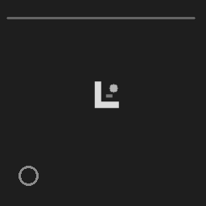
| 방법 | 중앙값 ms | 누락 | 추가 | 합격 |
|---|---|---|---|---|
| Line2D | 16.31 | 0 | 0 | PASS |
| SubNcc | 48.32 | 0 | 0 | PASS |
| DirectionalChamfer | 82.31 | 0 | 0 | PASS |
| OpenCvFixed | 1.14 | 0 | 0 | PASS |
| OpenCvRotated | 17.82 | 0 | 0 | FAIL |
세 알고리즘과 OpenCV 비교. 합성 정답과 Kensa 원본의 알려진 대상 검증을 구분합니다. results.json에 모든 설정과 결과가 있습니다.
Development / 정답 완전: True
템플릿 / 검사 영상

| 방법 | 중앙값 ms | 누락 | 추가 | 합격 |
|---|---|---|---|---|
| Line2D | 16.31 | 0 | 0 | PASS |
| SubNcc | 48.32 | 0 | 0 | PASS |
| DirectionalChamfer | 82.31 | 0 | 0 | PASS |
| OpenCvFixed | 1.14 | 0 | 0 | PASS |
| OpenCvRotated | 17.82 | 0 | 0 | FAIL |
Development / 정답 완전: True
템플릿 / 검사 영상
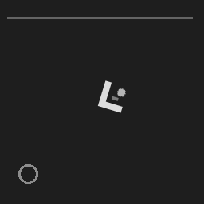
| 방법 | 중앙값 ms | 누락 | 추가 | 합격 |
|---|---|---|---|---|
| Line2D | 15.89 | 0 | 0 | PASS |
| SubNcc | 21.77 | 0 | 0 | PASS |
| DirectionalChamfer | 71.69 | 0 | 0 | PASS |
| OpenCvFixed | 1.2 | 1 | 0 | FAIL |
| OpenCvRotated | 18.18 | 0 | 0 | PASS |
Development / 정답 완전: True
템플릿 / 검사 영상
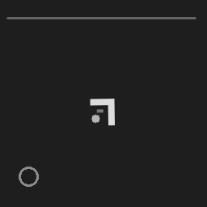
| 방법 | 중앙값 ms | 누락 | 추가 | 합격 |
|---|---|---|---|---|
| Line2D | 68.13 | 0 | 0 | PASS |
| SubNcc | 113.34 | 0 | 0 | PASS |
| DirectionalChamfer | 105.59 | 0 | 0 | PASS |
| OpenCvFixed | 1.35 | 1 | 0 | FAIL |
| OpenCvRotated | 36.98 | 0 | 0 | PASS |
Development / 정답 완전: True
템플릿 / 검사 영상
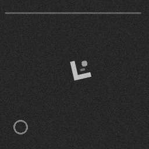
| 방법 | 중앙값 ms | 누락 | 추가 | 합격 |
|---|---|---|---|---|
| Line2D | 14.05 | 0 | 0 | PASS |
| SubNcc | 39.09 | 0 | 0 | PASS |
| DirectionalChamfer | 72.4 | 0 | 0 | PASS |
| OpenCvFixed | 1.58 | 1 | 0 | FAIL |
| OpenCvRotated | 18.39 | 0 | 0 | PASS |
Development / 정답 완전: True
템플릿 / 검사 영상
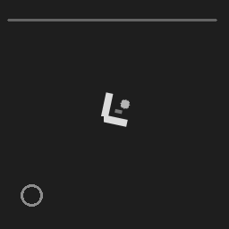
| 방법 | 중앙값 ms | 누락 | 추가 | 합격 |
|---|---|---|---|---|
| Line2D | 11.74 | 0 | 0 | PASS |
| SubNcc | 21.48 | 0 | 0 | PASS |
| DirectionalChamfer | 72.83 | 0 | 0 | PASS |
| OpenCvFixed | 1.34 | 0 | 0 | FAIL |
| OpenCvRotated | 20.5 | 0 | 0 | PASS |
Development / 정답 완전: True
템플릿 / 검사 영상
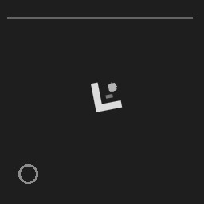
| 방법 | 중앙값 ms | 누락 | 추가 | 합격 |
|---|---|---|---|---|
| Line2D | 16.7 | 0 | 0 | PASS |
| SubNcc | 84.32 | 0 | 0 | PASS |
| DirectionalChamfer | 88.48 | 0 | 0 | PASS |
| OpenCvFixed | 2.92 | 0 | 0 | FAIL |
| OpenCvRotated | 30.3 | 0 | 0 | PASS |
Development / 정답 완전: True
템플릿 / 검사 영상
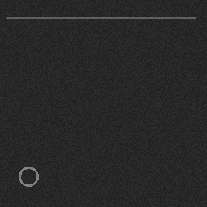
| 방법 | 중앙값 ms | 누락 | 추가 | 합격 |
|---|---|---|---|---|
| Line2D | 12.28 | 0 | 0 | PASS |
| SubNcc | 38.17 | 0 | 0 | PASS |
| DirectionalChamfer | 74.67 | 0 | 0 | PASS |
| OpenCvFixed | 1.08 | 0 | 0 | PASS |
| OpenCvRotated | 7.71 | 0 | 0 | PASS |
Development / 정답 완전: True
템플릿 / 검사 영상
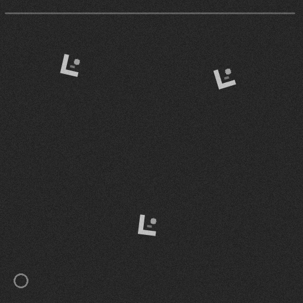
| 방법 | 중앙값 ms | 누락 | 추가 | 합격 |
|---|---|---|---|---|
| Line2D | 56.82 | 0 | 0 | PASS |
| SubNcc | 370.69 | 0 | 0 | PASS |
| DirectionalChamfer | 299.6 | 0 | 0 | PASS |
| OpenCvFixed | 5.72 | 2 | 0 | FAIL |
| OpenCvRotated | 100.52 | 0 | 0 | PASS |
Development / 정답 완전: True
템플릿 / 검사 영상
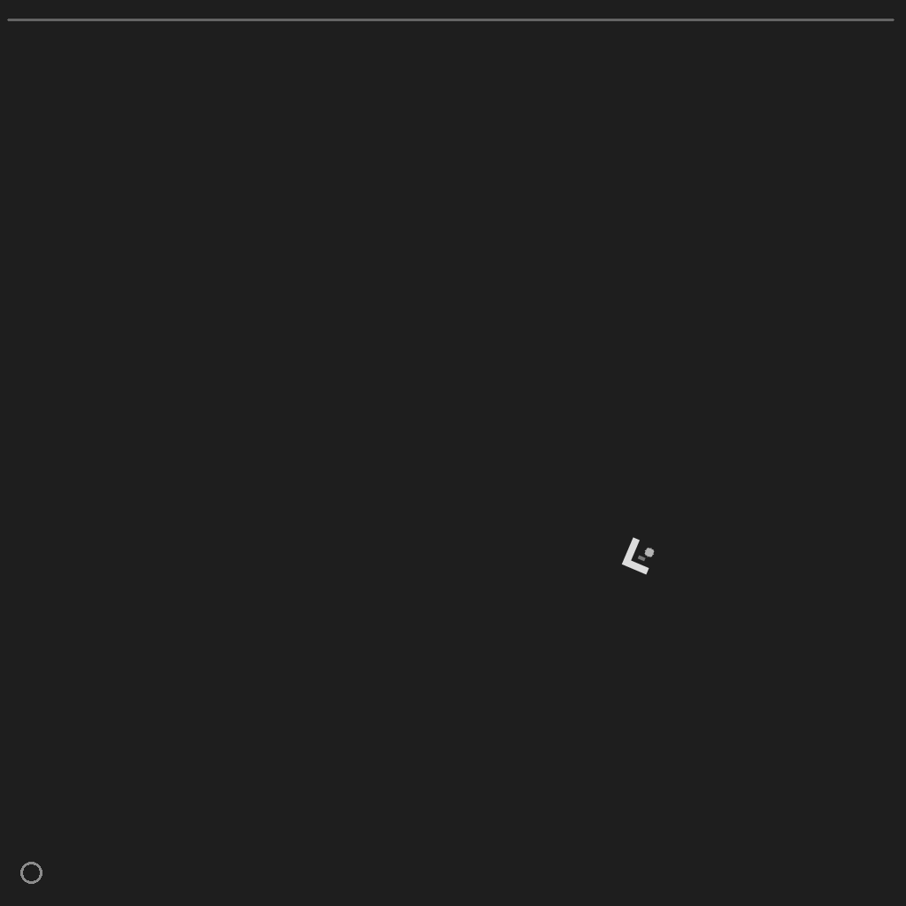
| 방법 | 중앙값 ms | 누락 | 추가 | 합격 |
|---|---|---|---|---|
| Line2D | 141.78 | 0 | 0 | PASS |
| SubNcc | 239.07 | 0 | 0 | PASS |
| DirectionalChamfer | 1178.77 | 0 | 0 | PASS |
| OpenCvFixed | 21.86 | 1 | 0 | FAIL |
| OpenCvRotated | 164.72 | 0 | 0 | PASS |
Development / 정답 완전: True
템플릿 / 검사 영상
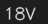
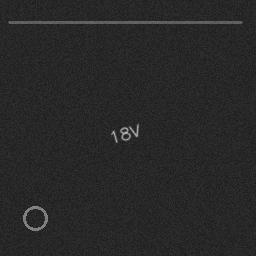
| 방법 | 중앙값 ms | 누락 | 추가 | 합격 |
|---|---|---|---|---|
| Line2D | 15.8 | 0 | 0 | PASS |
| SubNcc | 75.54 | 0 | 0 | PASS |
| DirectionalChamfer | 101.16 | 0 | 0 | PASS |
| OpenCvFixed | 1.92 | 1 | 0 | FAIL |
| OpenCvRotated | 23.52 | 0 | 0 | FAIL |
Development / 정답 완전: True
템플릿 / 검사 영상
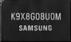
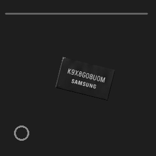
| 방법 | 중앙값 ms | 누락 | 추가 | 합격 |
|---|---|---|---|---|
| Line2D | 14.46 | 0 | 0 | PASS |
| SubNcc | 23.31 | 0 | 0 | PASS |
| DirectionalChamfer | 80.65 | 0 | 0 | PASS |
| OpenCvFixed | 1.44 | 1 | 0 | FAIL |
| OpenCvRotated | 9.72 | 1 | 0 | FAIL |
Development / 정답 완전: True
템플릿 / 검사 영상
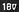
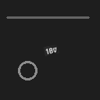
| 방법 | 중앙값 ms | 누락 | 추가 | 합격 |
|---|---|---|---|---|
| Line2D | 45.47 | 0 | 0 | PASS |
| SubNcc | 138.97 | 0 | 0 | PASS |
| DirectionalChamfer | 45.93 | 0 | 0 | PASS |
| OpenCvFixed | 0.21 | 1 | 0 | FAIL |
| OpenCvRotated | 4.28 | 0 | 0 | FAIL |
Development / 정답 완전: False
템플릿 / 검사 영상
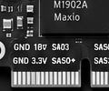
| 방법 | 중앙값 ms | 누락 | 추가 | 합격 |
|---|---|---|---|---|
| Line2D | 22.02 | 0 | 0 | KNOWN ONLY |
| SubNcc | 72.8 | 0 | 0 | KNOWN ONLY |
| DirectionalChamfer | 34.44 | 0 | 0 | KNOWN ONLY |
| OpenCvFixed | 0.4 | 0 | 0 | KNOWN ONLY |
| OpenCvRotated | 28.46 | 0 | 0 | KNOWN ONLY |
Validation / 정답 완전: True
템플릿 / 검사 영상
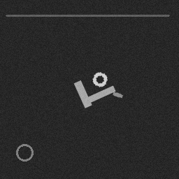
| 방법 | 중앙값 ms | 누락 | 추가 | 합격 |
|---|---|---|---|---|
| Line2D | 15.09 | 0 | 0 | PASS |
| SubNcc | 27.68 | 0 | 0 | PASS |
| DirectionalChamfer | 88.98 | 0 | 0 | PASS |
| OpenCvFixed | 1.94 | 1 | 0 | FAIL |
| OpenCvRotated | 28.64 | 0 | 0 | PASS |
Validation / 정답 완전: True
템플릿 / 검사 영상
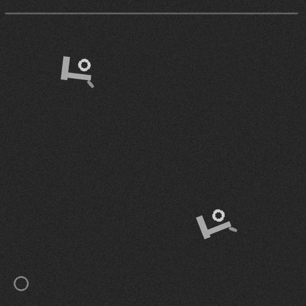
| 방법 | 중앙값 ms | 누락 | 추가 | 합격 |
|---|---|---|---|---|
| Line2D | 54.56 | 0 | 0 | PASS |
| SubNcc | 138.26 | 0 | 0 | PASS |
| DirectionalChamfer | 346.49 | 0 | 0 | PASS |
| OpenCvFixed | 9.52 | 1 | 0 | FAIL |
| OpenCvRotated | 92.4 | 0 | 0 | PASS |
Validation / 정답 완전: True
템플릿 / 검사 영상
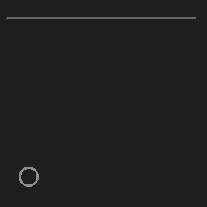
| 방법 | 중앙값 ms | 누락 | 추가 | 합격 |
|---|---|---|---|---|
| Line2D | 9.4 | 0 | 0 | PASS |
| SubNcc | 11.31 | 0 | 0 | PASS |
| DirectionalChamfer | 76.25 | 0 | 0 | PASS |
| OpenCvFixed | 1.04 | 0 | 0 | PASS |
| OpenCvRotated | 9.59 | 0 | 0 | PASS |